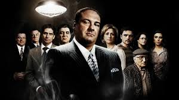

Los Soprano se caracteriza por sus eclécticas selecciones de música y ha recibido el aplauso de la crítica por su eficaz empleo de canciones antiguas.58596061 Chase seleccionaba personalmente toda la música de la serie con el productor Martin Bruestle y el editor musical Kathryn Dayak, consultando también en ocasiones con Steven Van Zandt.58 Normalmente la música era seleccionada una vez que se completaban los procesos de edición y producción de los episodios, pero en ocasiones las secuencias se filmaban conjuntamente con los fragmentos de música preseleccionados.42 El tema de apertura de la serie es "Woke Up This Morning" (en su versión Chosen One Mix), escrito e interpretado por la banda británica Alabama 3.62
En los créditos finales de cada episodio se incluye, salvo algunas excepciones,60 una canción diferente. Muchas canciones se repitieron varias veces en un episodio, como "Living on a Thin Line" de The Kinks en el episodio "Universidad" de la tercera temporada; y "Glad Tidings" de Van Morrison, en el episodio "Con el debido respeto", al final de la quinta temporada.60 También hay algunas canciones que suenan en varias ocasiones durante la serie, como "Con te partirò", interpretado por el tenor italiano Andrea Bocelli,63 y que está considerado como el tema musical del personaje de Carmela Soprano.64 Si bien la serie utiliza un gran repertorio de música grabada previamente por otros artistas, es conocida su falta de música incidental compuesta originalmente, en comparación con otras series de televisión.65 Se han lanzado dos bandas sonoras con la música de la serie desde su debut en televisión. La primera, titulada The Sopranos: Music from the HBO Original Series, fue lanzada en 1999. Contiene una selección de música de las dos primeras temporadas y alcanzó el puesto 54 en el Billboard 200.6667 El segundo recopilatorio, The Sopranos: Peppers & Eggs: Music from the HBO Original Series, salió a la venta en 2001 y es un doble álbum con canciones y diálogos seleccionados de las tres primeras temporadas de la serie.68 Llegó hasta el puesto 38 en el Billboard 200.